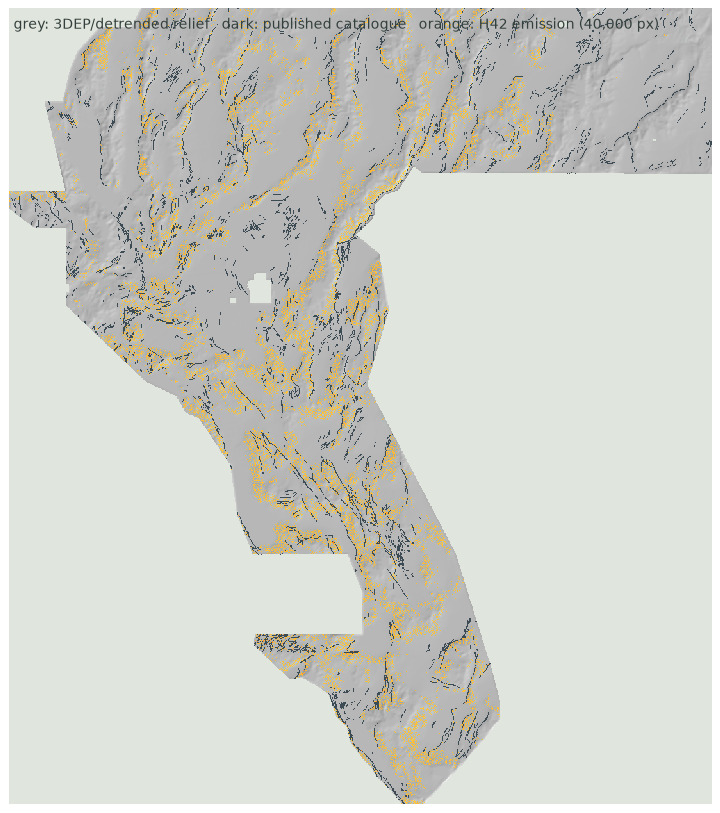

Terrain relief at basin margins
Slope × (1 − detrended elevation), i.e. steep terrain at low relief position: the range-front setting where Great Basin geothermal systems sit. (slope^0.5 · (1−det)^1.5)^0.55
A freshly generated fault-confidence raster: terrain relief at the base of the ranges, corroborated by 1 m LiDAR scarp evidence, packed to 40,000 pixels and thinned 200 m off the published catalogue.
Blocked-holdout gate · passed · one slotOne band · float32 · EPSG:32611 · 100 m · 3292 × 3730 · every stored value finite and in [0, 1] · 40,000 emitted pixels
Freshly generated for this submission. Not organizer-scored. One of three weekly slots; the archived H41 field further down is not the file to send.

Twenty-one configurations were emitted fresh inside every held-out block at equal mass and scored on eroded interiors. The shipped surface is the best valid arm: mean DTI 0.251 (worst fold 0.242) against a uniform-random control at the same mass of 0.121 and a catalogue-density control of 0.177. The previously closed H41-A/H41-E arms measured 0.0 on this same instrument.
Read the H42 evidence →The holdout's truth is the published catalogue, so it ranks geometry and cannot reward a genuinely new fault. It is a screening instrument, not a score forecast.
The SGMC independent-map instrument disagrees with it (it rewards high terrain instead) — both measurements are published in the gate receipt, and the hidden-truth association from 16 archived artifacts is used as the tie-breaker. 0.2778 remains user-reported without an organizer receipt; current leaderboard standings are unknown.
Slope × (1 − detrended elevation), i.e. steep terrain at low relief position: the range-front setting where Great Basin geothermal systems sit. (slope^0.5 · (1−det)^1.5)^0.55
USGS 3DEP scarp evidence (public, no use restrictions) enters as a 0.25 exponent, so a candidate must show surface-rupture evidence as well as favourable relief position.
Reduced-to-pole magnetics enter at 0.20. Greedy packing enforces 400 m minimum spacing to 40,000 px, then everything within 200 m of the catalogue is deleted.
p(x) = ( slope^0.5 · (1 − det_elev)^1.5 )^0.55 · scarp^0.25 · tmi_hg^0.20
emit: greedy top-40,000 px at ≥4 px separation, inside footprint, >2 px from any catalogue pixelSurface, spacing and mass were fixed by a declared rule registered before the final build: highest blocked-holdout mean DTI at equal mass, cross-checked against the hidden-truth association measured from the 16 archived artifacts.
Assign axial strike to NW or N/NNE geometry. Retain every classification, including ambiguous and source-slip-discordant traces.
Find the nearest N/NNE receiver within 5 km of an outward-facing NW endpoint. Reject connected fragments and boundary tips.
Compare a topographic tangent proxy with the geometrically closer population. No new magnetic, gravity, thermal, or conductivity transform.
The static site serves the precomputed, verified model output. It does not claim to train a model in your browser.
Submission instructions →H41-A-R is the separate raster-based implementation preserved from PR #8; it is not the source-vector H41-A featured above. Its registered four-quadrant test found no eligible candidate support in 4/4 interiors, so its DTI is null/unevaluable—not zero—and it is not slot-eligible.
Unique tracking name: GEMSDOE41-H41A-RASTER-BIMODAL-TRANSFER
SHA-256: 5e8e528d105cf060490511a033c692f72dd761d09259fa7ae40c53dfc136e05f
↓ Download H41-A-R research GeoTIFF
Method, limitations, and evidence →
Variant-specific upload guide →
Download is for research/inspection only. Do not spend a submission slot until a candidate beats the locked spatial holdout best.
A browser-fetched 30-day snapshot of magnitude ≥1 events near the study area. Seismicity is context only—not proof of a fault, geothermal resource, or candidate truth.
Loading the live USGS event feed…
This feed contacts USGS ComCat directly. It never polls DrivenData or its leaderboard. If browser access is blocked, use the linked official query.
Its masked 20 km audit and its conditional short-strand holdout both failed (0.008975 vs 0.009156 for matched-mass H41-A), so its slot gate is closed. It is kept here for the audit trail; the current submission is the H42 GeoTIFF at the top of this page.
Freshly computed from mapped geometry and the existing topographic tangent—not copied from H33 or another submission.
Format verified · holdout gate CLOSED · do not submit yet
Single float32 band · EPSG:32611 · 3730 rows × 3292 columns · all 12,279,160 numeric cells finite [0,1] · internal footprint mask. Earlier experiments below remain archived, not promoted.